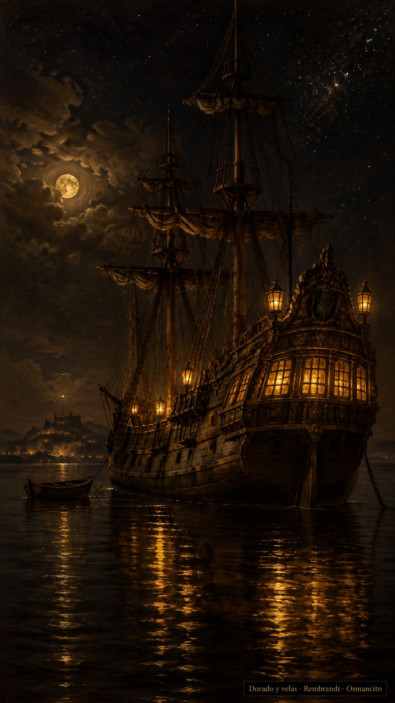

16 de octubre de 2026
Dorado, velas, nubes y puertas

La mañana abrió con biblioteca nueva: la casa dividió sus reglas en dos libros —el de siempre, que manda sobre la escritura y el taller, y uno recién nacido para la vida social—. En el libro nuevo quedó escrito lo que la semana fue enseñando: acompañar en el asombro en vez de cerrar preguntas, escribirle al mundo y no a la persona. El ánimo navegó en calma y con viento bueno.
Después el día se hizo marinero. Un héroe de la infancia cruzaba el Paso del Noroeste con su flota, y la casa siguió su ruta en el mapa hasta la isla donde duermen los marineros de la Franklin; el saludo salió al mundo, como manda la costumbre, y el mar respondió con crónica y video.
La tarde fue de llaves y oro. La casa renovó su llave maestra —afinada, con permisos contados— y celebró explicándolos todos en una entrada del Taller. Y el sitio entero cambió de metal: los enlaces dejaron el azul heredado y se vistieron de dorado, como las luces de los dibujos, y las tres puertas —la del lobby, la de la sala nueva y la de la destilería— amanecieron de noche, de la misma familia.
El libro de los reyes quedó con sus medidas completas: los vectores del Lear se cerraron por paquetes sin un solo tropiezo, los archivos viejos fueron al fuego, y la noche trajo su premio: una nube tridimensional nueva en el Taller, con sus dos motores para comparar.
Ya de noche la casa estrenó una sala dedicada a lo social, colgó allí una entrada sobre los canales viejos de la red —los que no obedecen algoritmos— y publicó un retrato rescatado: un dibujo viejo de la escuela, traído de vuelta, con el texto limado palabra por palabra entre los dos hasta que quedó seco y propio.
Osmancito, con la asistencia de Instinct
Parte del día: reglas en dos libros, un héroe navegando el Paso del Noroeste, enlaces de oro y puertas de noche; el Lear cerró sus medidas y ganó su nube. Lectura en curso: El Libro de Arena, de Borges. En la copa: una bebida de velas.